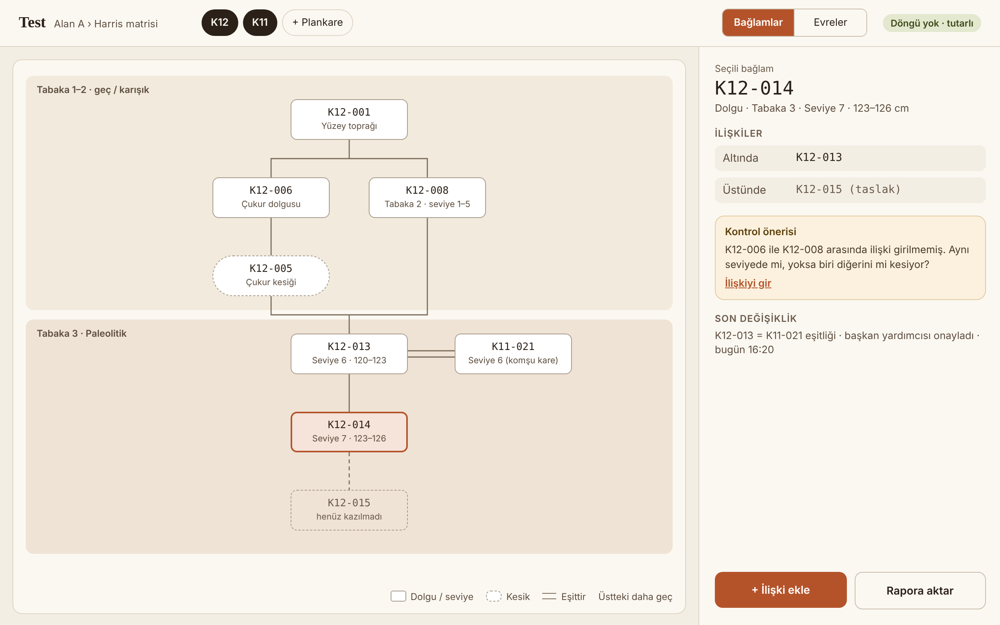
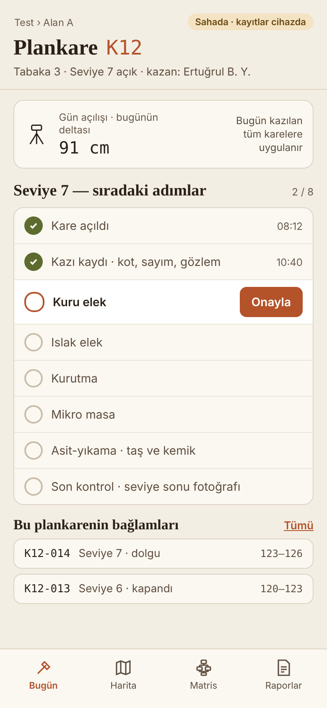
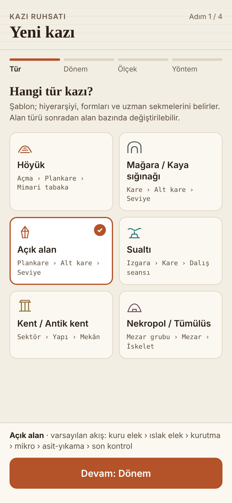
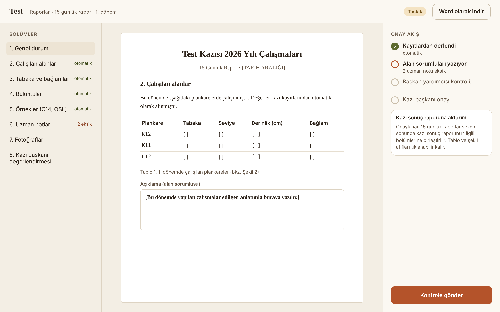
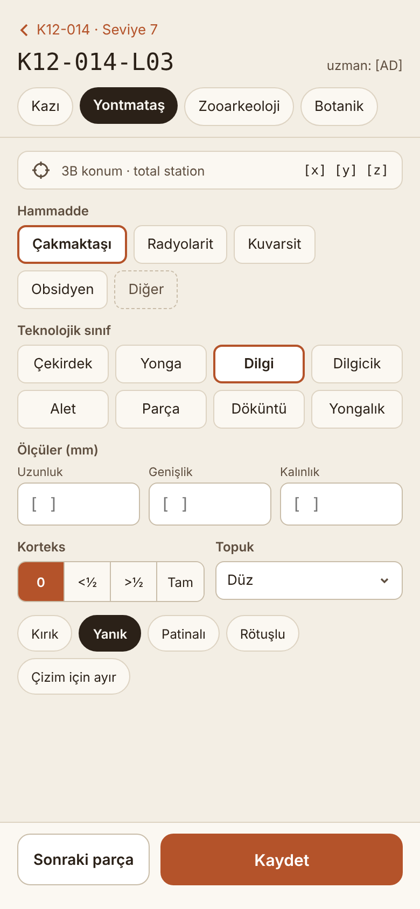

Açmadan rapora, sahadan arşive: arkeolojik kazının bütün kayıtları tek programda. Ekip sahada telefondan girer, uzmanlar kendi sekmesinde çalışır, kazı başkanı onaylar ve raporu tek tıkla alır.



Kazıyı kurarken türünü, dönemini, ölçeğini ve yöntemini seçersiniz. Harrix hiyerarşiyi, formları ve uzman sekmelerini buna göre hazırlar; terimler sahadaki gerçek uygulamayı izler.
Girişte rolünüze göre günün işleri: delta, görevler, onay bekleyen raporlar, eksik kayıtlar.
Yontmataş, zooarkeoloji, arkeobotanik… Her uzman yalnızca kendi alanının verisini girer.
Bağlamlar arasındaki ilişkiler çizilir; eksik ya da çelişkili ilişki için kontrol önerisi gelir.
15 günlük ve kazı sonu raporları kayıtlardan hazırlanır, onay akışından geçer, Word olarak iner.
Her rapor HRX-XXXX-XXXX koduyla ve karekodla gelir; değişmediği kontrol edilebilir.
Türe, yere, açmaya, etikete ve tarihe göre süzün; buluntuya bağlayın, künye listesiyle birlikte indirin.
Mala karakterimiz Harri, internet olmadan da soruları yanıtlar ve sizi ilgili ekrana götürür.
Program kazı başkanının bilgisayarına kurulur. Uzaktan destek yalnızca başkanın onayıyla açılır.
Tür, dönem, ölçek ve yöntem: dört adımda kazınız hazır.
Kot, sayım, gözlem, fotoğraf ve günlük; telefondan, açmanın başında.
Buluntular uzman sekmelerinde ölçülür, sınıflanır, çizime ayrılır.
Rapor kayıtlardan derlenir, kontrol edilir, onaylanır ve indirilir.


Kazı ekibinin günlük çalıştığı program: kayıt, görev, fotoğraf, rapor.
Kazı başkanının masaüstü paneli: günaydın hatırlatmaları, kazılar, destek, bülten.
Arkeoloji haberleri, makaleler ve tezler her gün tek yerde; masaüstünde, telefonda ve web'de.
Arkix'i aç →Arkeologlar arası bilgi paylaşımı ve seminerler; ziyaretçiler için ören yeri mühürleri.
2027 sezonunda farklı türde birkaç kazıyla pilot çalışma yapıyoruz. Kurulumu ve eğitimi biz yapıyoruz; karşılığında yalnızca düzenli geri bildirim istiyoruz.
Program kazı başkanının bilgisayarına kurulur; kayıtlar orada durur. Uzaktan destek yalnızca başkan onay verdiğinde açılır.
Kazı evindeki bilgisayara kurulur; ekip Android ya da iPhone telefonlardan, tabletten ve bilgisayardan bağlanır.
2027 pilot programı ücretsizdir. Pilot dönemin ardından sezonluk ve kurumsal lisans seçenekleri açıklanacaktır.
15 günlük ve kazı sonu raporları kayıtlardan derlenip Word olarak iner. Bakanlık formatlarına doğrudan çıktı yol haritamızda.
Evet. Güncellemeler yayımlandıkça program bildirir, yenilikleri gösterir; güncellemeyi kazı başkanı onaylar.
Evet, her kullanıcı dili Türkçe ya da İngilizce olarak kendisi seçer.